全部主題
NVIDIA執行長黃仁勳因婚外情等風波，從正式請辭到董事會一致通過回任，11月23日在美國總統川普（Donald Trump）強勢關切下，僅11天戲劇性復職。NVIDIA領導層動盪雖暫時平息，董事會卻也遭批受白宮擺布，也引起華府國會對國安風險與企業治理失靈的...
Nvidia CEO Jensen Huang apologized to staff during his first all-hands since returning to the company, while attempting to distance himself from the narrative that the White House and tech leaders helped him get his job back, according to reports from Bloomberg, The New York Time
OpenAI與思科（Cisco）11月23日宣布推出開源資安工具Shirudo，運用人工智慧（AI）協助Linux系統在正式修補漏洞前，先建立防護措施，阻擋駭客攻擊，且無須中斷服務。
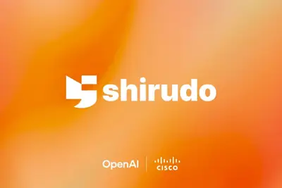
AI songs account for 6.3 percent of Tidal's catalog, but it's about to be zero.
Anthropic 於美國時間 11/23 推出 Claude Ship，由三個 AI 代理接手開發者在 GitHub 送出 PR（拉取請求，開發者提交程式碼變更、待審查後合併的請求）之後的流程：審查程式碼、修正問題，再依各團隊設定的政策，判斷還需要誰核准、哪些變更 Claude 可以代為核准。Anthropic 的說法是，開發者送出 PR 後，就能回頭繼續開發。其中 Code Review 已正式推出，負責修正的 PR Steward 與負責核准的 Claude Approvals 仍是公開測試版。 《SiliconANGLE》分析指出，程式碼審查與修
The new integration gets rid of the need for users to toggle between Instagram and the Muse app when they want to interact with the AI agent.
IT之家 11 月 25 日消息，全球首富埃隆 · 马斯克（Elon Musk）于 11 月 22 日在 X 平台发布推文，表示下一代 AI5 芯片将优先部署到 Optimus 人形机器人及相关 AI 训练系统。 网友 @JBrunner8484 于 22 日在 X 平台提问：“特斯拉 AI5 芯片什么时候可以应用到新车方面？我目前使用的是 AI3，我看看升级是否需要再等等”。 马斯克回帖该网友，表示：“特斯拉 AI5 芯片将优先部署到 Optimus 人形机器人方面，汽车将维持在 AI4 芯片上，AI4 足以解决超人（superhuman）驾驶的问题。
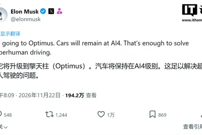
Anthropic’s post-IPO slump could put pressure on AI startup valuations.
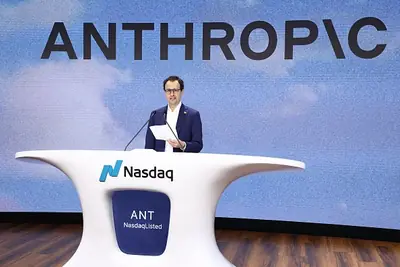
Amazon’s decision to acquire Decart for a reported $7.5 billion is part of its efforts to improve the efficiency of its Trainium chips.
早安。
由兩名微軟（Microsoft）前副總裁共同創辦的新創公司 Marlowe，於 2026 年 11 月 23 […]
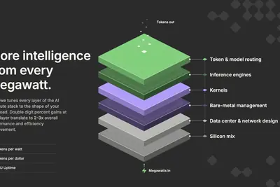
NVIDIA董事會2026年11月23日一致決議讓黃仁勳即刻回任總裁、執行長與董事，距離正式請辭「僅11天」就大反轉，讓外界擔憂的領導危機暫時落幕。
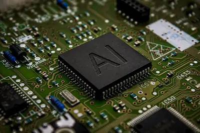
NVIDIA創辦人暨執行長黃仁勳在短短11天經歷辭職到重回權力核心，戲劇性轉變雖讓市場拍手叫好，但供應鏈認為，未來NVIDIA董事會強化監督機制，以及美國對AI晶片出口管制持續緊縮，這些都對中國AI供應鏈出貨的壓力不減反增，中國雲端及伺服器業者對關鍵零組件...
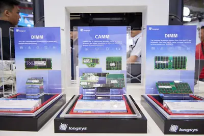
黃仁勳雖然確定回歸NVIDIA擔任執行長職務，但美國商務部產業安全局（BIS）防堵AI晶片轉運的暫行最終規則已於11月19日生效，且美國商務部於11月23日也將Megaspeed等新加坡、馬來西亞、泰國共7個實體列入實體清單（Entity List），新規範圍...
全球關注NVIDIA執行長黃仁勳回鍋，及美國鎖死第三地灰色算力漏洞的背景下，外媒指出，歐盟將在近日宣布，油電混合車（HEV）與插電式油電混合車（PHEV）年度進口配額，從原本針對中系車限制，擴大至日、韓、英、土等國。
被譽為晶片設計界奧林匹克的「IEEE 國際固態電路研討會（ISSCC）」近日公布2027年論文入選名單。台灣投稿58篇，入選10篇。中國投460篇，含港澳合計入選124篇，居各國之冠。鈺創董事長盧超群24日特別前往記者會向台灣入選的師生和業界代表恭賀。<b...
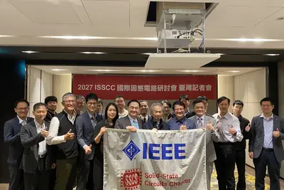
黃仁勳這場科技圈人事風暴，劇情反轉之快「連小說都不敢這麼寫」，環球時報前總編輯胡錫進在鳳凰網如此評論，直接以「魔幻大反轉：黃仁勳『王者歸來』」為題，形容這場人事變局之峰迴路轉。
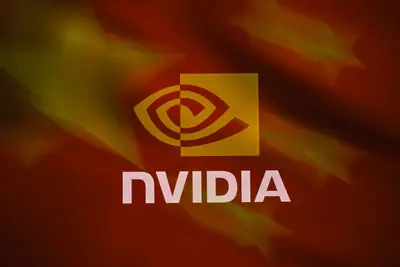
外界視為戲劇性的發展，NVIDIA執行長黃仁勳正式辭職11天後又重返掌舵，而這段短暫的權力真空期，美國更已徹底改寫全球AI算力規則，將科技競爭從單純的硬體禁運，推向跨境雲端封鎖的嚴格層面。重掌帥印的黃仁勳，眼前正擺著一個亟待拆彈的地緣政治與合規難題。<br...
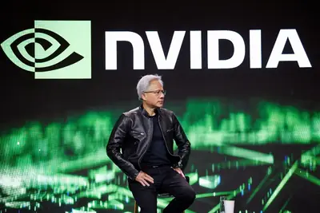
人工智慧（AI）基礎設施投資正從大型語言模型（LLM）訓練，進一步擴展至企業推論、代理程式及分散式AI部署，帶動伺服器、儲存與資料中心網路需求同步升溫。慧與科技（HPE）高層預期相關需求將延續至2027年，並將網路業務提升至與AI伺服器同等重要的成長引擎。
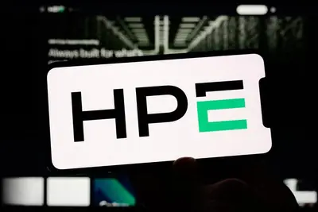
黃仁勳重新掌舵NVIDIA，但美國對東南亞晶片出口管制仍在。馬來西亞、新加坡國家領導人近日陸續對外發言，重申自己的國家不應成為走私中轉站，同時仍有信心能與中國保持良好合作關係。
Nvidia’s place at the center of the US economy may have outweighed concerns about its CEO’s ties to a suspected Chinese intelligence asset, national security and foreign policy experts say.
美中元首近期密切會晤，雙方同意將貿易休兵延長至明年 1 月。川習二會閉門密談長達 90 分鐘，華府隨後舉行不對 […]
IT之家 11 月 25 日消息，OpenAI 昨日（11 月 24 日）发布博文，报道称两位业余天文学家借助 Codex 与 Astra， 在公开的望远镜数据中找到了多个潜在系外行星信号，并已提交给专业天文学家作独立验证。 这些发现尚未被正式确认为行星，但为后续观测提供了值得追踪的线索。 OpenAI 工程师凯文 · 邦德（Kevin Bond）借助 Codex，系统筛查开普勒望远镜观测的约 10 万颗恒星数据。程序在 200 多个候选信号中，成功重新识别出 10 个此前已被确认的系外行星信号，初步验证了这一方法的有效性与可靠性。 两名美国宇航局凌日系
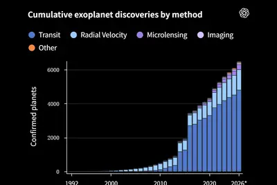
IT之家 11 月 25 日消息，Anthropic 宣布为 Claude 的交互式 Artifacts 功能推出“安装为应用”（Install as app）选项，允许用户将生成的应用作为独立软件安装到 macOS 和 Windows 桌面。 据 Anthropic 官方介绍，安装后的 Artifacts 应用将拥有独立的桌面工具栏图标，使用体验类似于将网页应用安装到电脑。用户无需每次通过浏览器标签页访问，即可直接启动相应应用。 在权限设置方面，用户可以选择默认权限模式，让应用以类似浏览器标签页的方式运行，也可以授予额外的应用权限，允许其发送通知、拦截
IT之家 11 月 24 日消息，据《商业内幕》今天（24 日）上午报道，检方披露，沙特籍 OpenAI 工程师阿卜杜勒拉赫曼 · 阿尔福赞曾试图 利用氛围编程改进秘密录制公司会议 的方式，而他选择的工具正是自己熟悉的 Codex。 阿尔福赞利用 OpenAI 自家的编程产品 改装了一台录音设备 。根据 OpenAI 提供的记录，该设备与 OpenAI 此前在一间会议室电视机后发现的设备属于同一类型。阿尔福赞还让 Codex 加入语音检测技能 ，并利用这项功能整理存放在 Dropbox 中的秘密录音。 美国检察官 23 日提交的动议披露了上述细节。这也是
I gave a keynote at the AI Engineer Code Summit a couple of weeks ago, constructed around the idea that there have been three significant inflection points in the abilities of LLMs and coding agents in the past twelve months. Here's the video of the talk. In this post I'm going t
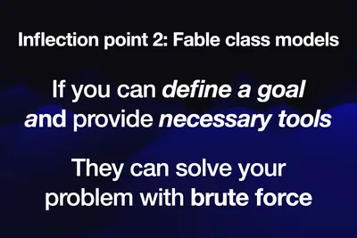
AI 賽局的競爭邊界已從單純的 GPU 晶片配額，轉向掌握「電網配額、發電端與輸電路徑」三位一體的 GW 級容 […]
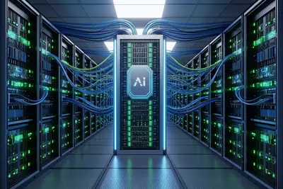
IT之家 11 月 25 日消息，OpenAI 昨日（11 月 24 日）发布预印本论文，称 GPT-6 系列模型无需依赖专用生物模型， 仅靠推理和通用编程工具，就能设计新的蛋白质三维结构和氨基酸序列，且已在多轮实验室测试中验证结合效果。 在实验室测试环境下，OpenAI 携手合作机构 Onava，研究团队以 GPT-6.2 设计的结构为蓝本，制作了 322 个微型结合蛋白，覆盖 5 个不同靶点。 其中 35 个（占比约为 10.9%）显示出结合迹象，涉及 PD-L1、IL-7Rα、TrkA、VEGF-A 和 IL-17A。另一项实验里，GPT-6.2
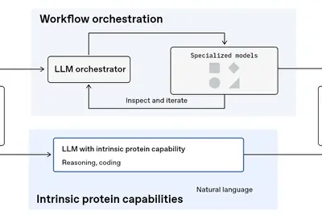
輝達（NVIDIA）執行長黃仁勳在董事會決議恢復其執行長職務後，於 11 月 24 日主持復職以來首次全體員工 […]
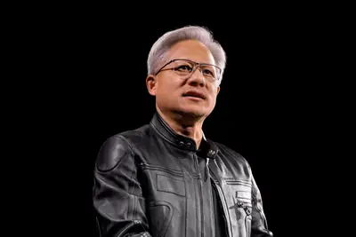
It's a remarkable stance for a company that spent the last two weeks finding out what happens without its founder.
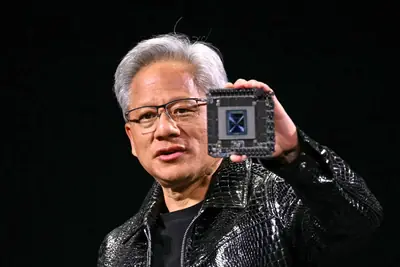
As millions embrace personal AI assistants, a new benchmark reveals that even the most advanced AI models struggle to complete everyday tasks reliably and safely without introducing potential new problems.
The startup's encrypted AI architecture is designed to prevent even the company itself from accessing users' private data.
Gemini gave me a little tough love and told me what I needed to hear about my finances.
A new AI-assisted proof seems to be solid, but we're not sure what it tells us.
Say goodbye to accidentally silencing your alarms.
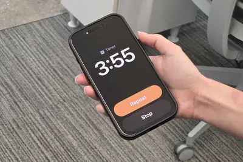
Amazon says Prime Air drones made “hundreds of thousands” of deliveries in 2026.
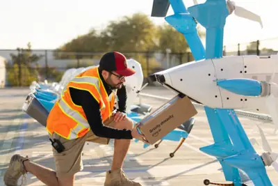
Though David Fincher's fans had been eagerly anticipating The Further Mis-Adventures of Cliff Booth, early screenings of the Once Upon a Time in Hollywood sequel starring Brad Pitt have raised questions about whether generative AI was used in the film. People have claimed that th
The British cyber agency says that "building strong foundations has never mattered more" as AI hacking tools rely on exploiting simple security flaws.
Gartner估2027年底前逾40%企業AI Agent專案將遭棄置，叡揚資訊點出工具不透明、成本黑洞、資安外洩等4大黑洞，企業如何避開？
IT之家 11 月 25 日消息，以“卓越创新、开放共赢”为主题的第七届华为创新和知识产权论坛昨日在北京举办。 ▲ 华为在北京召开第七届创新和知识产权论坛 据介绍， 2025 年华为增加了 20 个被许可人 ，覆盖网络与通信设备、消费电子与计算、物联网、汽车、流媒体和半导体等领域。 截至目前，华为对外专利许可协议累计金额超 69 亿美元 （IT之家注：现汇率约合 460.87 亿元人民币） ，其中 2025 年的专利许可收入约为 8 亿美元 （现汇率约合 53.43 亿元人民币） 。截至 2025 年底，超过 32 亿部 5G 设备、超过 16 亿台 W